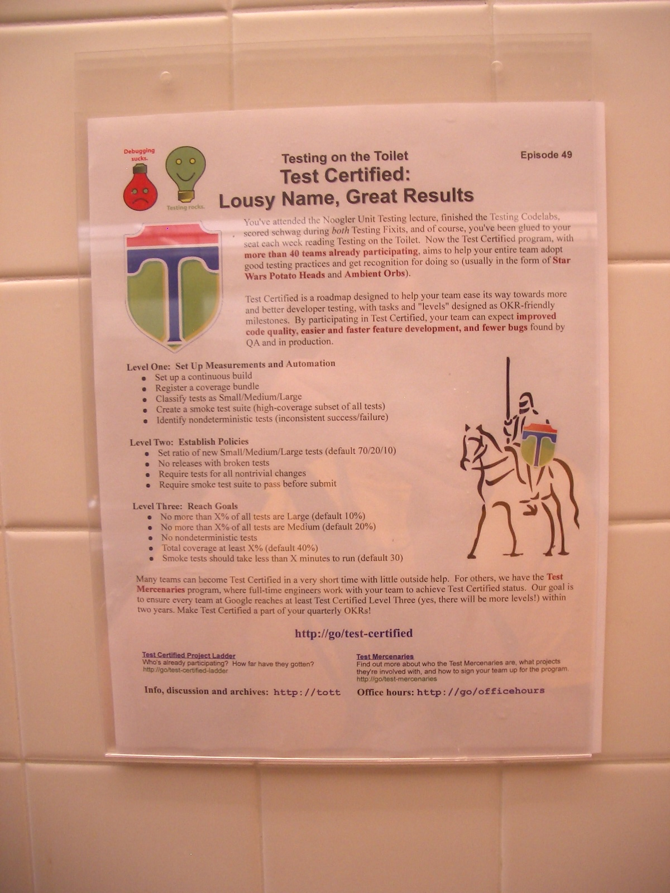
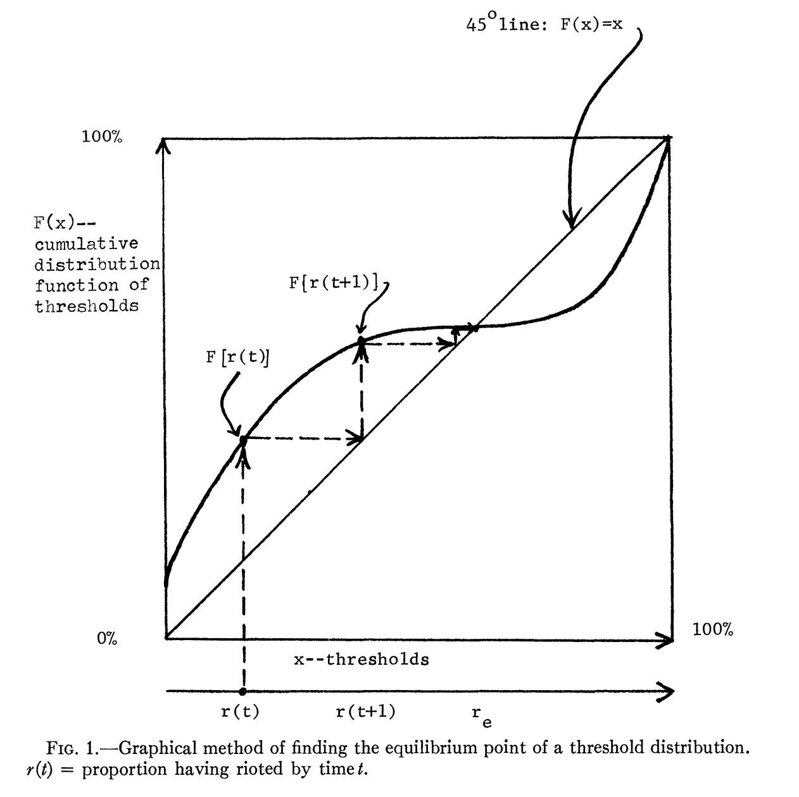

I build tools for people
My coworkers' AI habits are contagious and yours are too.
Even in the pre-LLM days, studies found that developer tool adoption is social. A 2011 paper1 by Murphy-Hill and Murphy reported that developers considered watching their peers use tools to be one of the best ways to discover new tools. This is understandable given that there are countless tools out there and it takes considerable effort to try each one.
In fact, I can probably blame someone for every single piece of software that I have ever used...
The seminal book Diffusion of Innovations2 explains that innovations spread through social interactions rather than each person evaluating the utility in isolation. Mass communication can raise awareness, but seeing someone you trust use a tool successfully is much more effective at convincing you to try it.
Developers at Google took an unexpected approach to solve this problem: advertising in restrooms. The weekly newsletter, now known as "Tech on the Toilet", describes tools and best practices written by developers within the company. Funny enough, researchers found the newsletters to be effective at getting developers to try new tools!3

A sociologist in the 1970s proposed the idea of a threshold model4. Let's say rt is the proportion of people that have already adopted something by time t, and F(x) is the proportion of people whose personal threshold is at most x, then the next round is rt+1 = F(rt). Or in normal speak, each time that more people adopt something, it can push other people past their threshold so that they then adopt it too, thus creating a cascade. A disconnected network or a high threshold can kill off adoption though.

A recent study5 at Microsoft found that developers were far more likely to try AI tools when their coworkers had recently used them. If at least 25% of a developer's code reviewers had recently used Copilot CLI, their odds of trying it afterwards were 54% higher. Managers had an even bigger effect on adoption.
So whatever comes next, you can blame your coworkers when you start using it too.
This article was not written by AI.